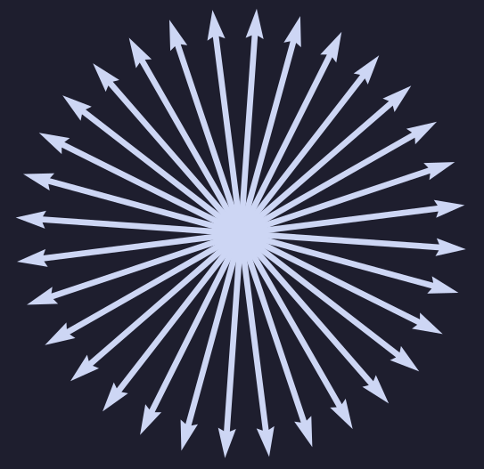
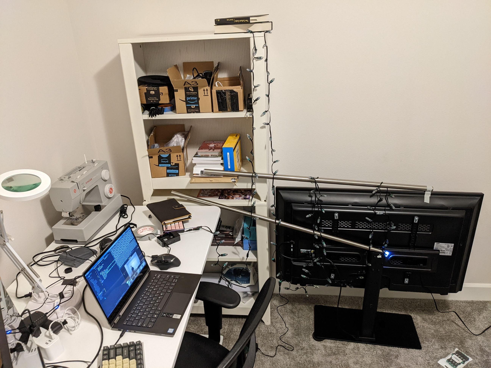
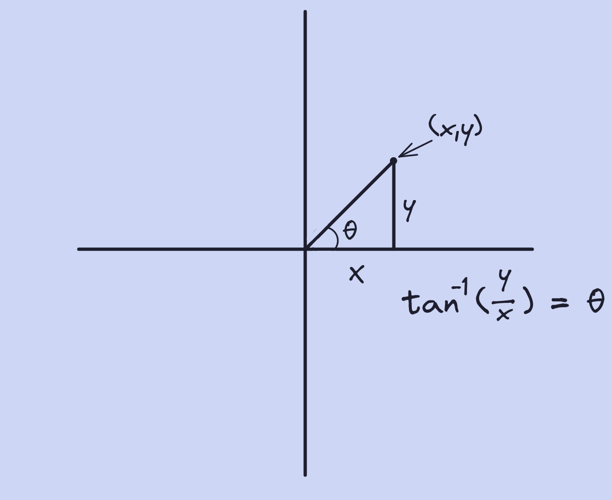
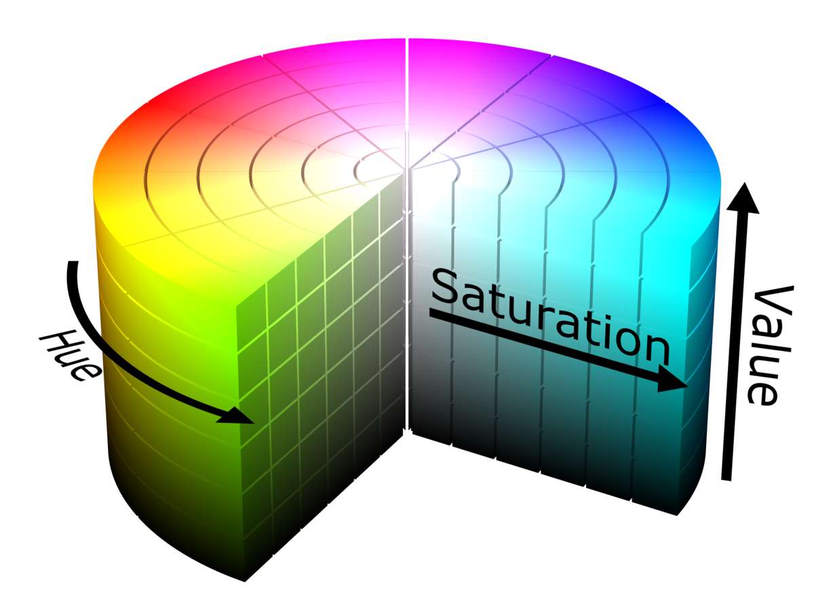

Orion
Andrews
Andrews
Mapping
and Rotation
and Rotation
Rotating LED patterns and 2D coordinates.
Mapping
I mentioned earlier the idea of describing LEDs in 2
dimensions. Here is where I will elaborate on that. When you
have a normal string of LEDs, they have no concept of their
position in space, the LED strips you might put up as
decoration are in 1 dimension, there is "in front" and
"behind" but the LEDs aren't even smart enough to discern
that. A controller at the beginning of the string just sends
a bunch of current down the wire and the LEDs scrape off a
bit and use that information to power themselves in a
certain way.
Most of the time, you have no control over the patterns, the manufacturer has created LEDs that understand a specific coded voltage that the controller sends out, and you have very little in the way of methods to control LEDs individually. With special LEDs though (ones with microcontrollers in each LED), you can add a layer of abstraction to the code the LEDs decipher and enable users to control each LED individually programmatically. This allows me to say "light LED 24 with this RGB value". With this, I can make a setup with a camera that takes a photo of each LED, lit individually.
With some more code, I can find the brightest pixel of each photo to give each LED a coordinate (x, y pixel value) and make each LED referenceable by its respective coordinate. So now, I can sort the coordinates in x-value order and light the lights up from, say, left to right. The possibilities are near endless and one of the first challenges I decided to take on was the challenge of creating a rotating pattern.
Most of the time, you have no control over the patterns, the manufacturer has created LEDs that understand a specific coded voltage that the controller sends out, and you have very little in the way of methods to control LEDs individually. With special LEDs though (ones with microcontrollers in each LED), you can add a layer of abstraction to the code the LEDs decipher and enable users to control each LED individually programmatically. This allows me to say "light LED 24 with this RGB value". With this, I can make a setup with a camera that takes a photo of each LED, lit individually.
With some more code, I can find the brightest pixel of each photo to give each LED a coordinate (x, y pixel value) and make each LED referenceable by its respective coordinate. So now, I can sort the coordinates in x-value order and light the lights up from, say, left to right. The possibilities are near endless and one of the first challenges I decided to take on was the challenge of creating a rotating pattern.
Rotation
After a couple of small optimizations, like including the
light coordinates as a supplemental text file and being able
to execute a certain pattern from a centralized exec file, I
moved on to tackle rotation.
The goal here was to create some really nice mathematical patterns using rotation. Rotation is a little tough, or at least it is when you don't know what you are doing. It just so happens that in the process of finding an effective method to represent rotation, I derived the 2 dimensional rotation matrix. That looks something like this:
The goal here was to create some really nice mathematical patterns using rotation. Rotation is a little tough, or at least it is when you don't know what you are doing. It just so happens that in the process of finding an effective method to represent rotation, I derived the 2 dimensional rotation matrix. That looks something like this:
Where X and Y are input coordinates and X' and Y' are output
coordinates.
Below is the output of the simple test I created to check if my math was correct (I did not know whether my math was correct or not because I had not thought to Google "rotation matrix").
Below is the output of the simple test I created to check if my math was correct (I did not know whether my math was correct or not because I had not thought to Google "rotation matrix").
And voilà! It worked! This was using an 18 degree rotation. This will be useful later.
Below is the output of the simple test I created to check if my math was correct (I did not know whether my math was correct or not because I had not thought to Google "rotation matrix").
Below is the output of the simple test I created to check if my math was correct (I did not know whether my math was correct or not because I had not thought to Google "rotation matrix").

And voilà! It worked! This was using an 18 degree rotation. This will be useful later.
So, at this point I had 100 lights set up in a horribly
precarious situation, I had a method for mapping and
describing the geometric relation between the lights, and I
had some cool patterns. Really all I did in the following
weeks was add more lights and create new patterns. Following
will be images and videos related to the light setup and the
patterns I have created. Please be advised that almost all
of the videos so far were taken with my laptop camera that
gets terribly overexposed and is only 1280x720. The effect
can be beneficial for seeing the macro of the light
patterns.

I wanted to stop here to talk about two things, the magic of HSV, and the hardships of rotation.
I'll start with the big issue I had with rotation as it ties in with the spiral you see.
Arctan and HSV
One piece of code I had written involved finding what angle
about a circle a point lay on. In order to find that, with
the x and y coordinates I had, I needed to use arctan.
Using arctan, I would be able to find the radian measure of a point about my origin. This works because where tangent takes in an angle value and will return a ratio between two lengths (though what the lengths are is not explicit), the inverse function of tangent (arctangent) takes in a ratio of side lengths and returns an angle measure. The range of these return values is between π/2 and -π/2 and so using some basic if statements I was able to determine which quadrant of the circle the point lay in and I would add π/2 if it was in the second or third. Arctan is shown below.

The issue with this is that the ratio of opposite over adjacent could return undefined. In the situation where the adjacent side, or the x value, is 0, you would have an undefined output. And it just so happens that in my real lighting setup, with my camera of 921,600 pixels and 1280 horizontal pixels, I had a light sitting EXACTLY on the y axis (an x value of 0). This was extremely difficult to debug as the error only occurred on the 8th rotation (144 degrees) and it was on light 270. This is truly fascinating as the likelihood of a light being on the y-axis at any rotation is 1/1280 or 0.00078. Not to mention that my decimal precision was set to 8, so the value of the adjacent side had to be less than 0.00000000.
Using arctan, I would be able to find the radian measure of a point about my origin. This works because where tangent takes in an angle value and will return a ratio between two lengths (though what the lengths are is not explicit), the inverse function of tangent (arctangent) takes in a ratio of side lengths and returns an angle measure. The range of these return values is between π/2 and -π/2 and so using some basic if statements I was able to determine which quadrant of the circle the point lay in and I would add π/2 if it was in the second or third. Arctan is shown below.
The issue with this is that the ratio of opposite over adjacent could return undefined. In the situation where the adjacent side, or the x value, is 0, you would have an undefined output. And it just so happens that in my real lighting setup, with my camera of 921,600 pixels and 1280 horizontal pixels, I had a light sitting EXACTLY on the y axis (an x value of 0). This was extremely difficult to debug as the error only occurred on the 8th rotation (144 degrees) and it was on light 270. This is truly fascinating as the likelihood of a light being on the y-axis at any rotation is 1/1280 or 0.00078. Not to mention that my decimal precision was set to 8, so the value of the adjacent side had to be less than 0.00000000.

The whole point of dealing with rotation at all was at the
challenge of a friend. After showing them all the things I
could do mathematically with the lights, they said I should
create a spiral. A spiral came across as pretty daunting but
it is actually quite simple.

That's it. Using a different constant in front of theta would allow for a bigger or smaller spiral and that is all I needed.
With this, I would calculate a certain number of points, say 50, that would fit perfectly into a spiral shape. I would then use that code written earlier to figure out which lights were closest to each point and I would light them. Once one spiral was illuminated, I would rotate all of the points using the matrix math above and I would get a new spiral.
This feels to me like a dramatic oversimplification, but it really isn't. The principle is quite simple, the execution is another problem.
That's it. Using a different constant in front of theta would allow for a bigger or smaller spiral and that is all I needed.
With this, I would calculate a certain number of points, say 50, that would fit perfectly into a spiral shape. I would then use that code written earlier to figure out which lights were closest to each point and I would light them. Once one spiral was illuminated, I would rotate all of the points using the matrix math above and I would get a new spiral.
This feels to me like a dramatic oversimplification, but it really isn't. The principle is quite simple, the execution is another problem.
Another issue I faced was on the computation side of using
these lights. My methods for transferring the data regarding
the lights that needed to be lit at this point had been
precarious. The first way I did it was by computing all the
lights that needed to be on, in order, and then I sent those
lights as arguments to the file execution in the command
line where they were interpreted on the other side. Bad
idea. The main issue with this is that you could only really
send one pattern at a time without writing some complex way
to parse the light numbers on the raspberry pi side. There
is also some character limit in the shell I use that is
somewhere around 5000.
After realizing I wanted to do this in a more efficient way. I decided to write an execution program that would send a certain file to the raspberry pi, compute all of the lights and their coordinates there, and then light them up. This worked ok. However, as I mentioned before, doing the calculations on the raspberry pi is limited and if you are doing something like, say, calculating all of the points on a spiral of a certain size and doing a bunch of trig to find the closest lights, you would have a long pause between animation frames.
The last, and current, method of data transfer comes in the form of precomputation on my computer. Effectively, I do everything I need to, calculation-wise, on my laptop and then I export a "lightOrder.txt" file that contains a list of lists of lights that would need to be turned on at any given time. I then have a second piece of code that parses the lightOrder however I want. For example, I could write that I wanted to sleep the program for 1 second between frames; I would write a sleep function into the parser each time it reads a list of lights. This removes a lot of strain from the raspberry pi and is just a more stable and structured way of actually lighting the lights.
After realizing I wanted to do this in a more efficient way. I decided to write an execution program that would send a certain file to the raspberry pi, compute all of the lights and their coordinates there, and then light them up. This worked ok. However, as I mentioned before, doing the calculations on the raspberry pi is limited and if you are doing something like, say, calculating all of the points on a spiral of a certain size and doing a bunch of trig to find the closest lights, you would have a long pause between animation frames.
The last, and current, method of data transfer comes in the form of precomputation on my computer. Effectively, I do everything I need to, calculation-wise, on my laptop and then I export a "lightOrder.txt" file that contains a list of lists of lights that would need to be turned on at any given time. I then have a second piece of code that parses the lightOrder however I want. For example, I could write that I wanted to sleep the program for 1 second between frames; I would write a sleep function into the parser each time it reads a list of lights. This removes a lot of strain from the raspberry pi and is just a more stable and structured way of actually lighting the lights.
When I first made the spiral code, I was calculating each
frame on the raspberry pi. Given that it had to do at least
15,000 trig calculations (50 points, 300 lights to check
distance), the frames came out really slowly. This was what
pushed me to change the way I sent the data to
precalculation with the lightOrder file. However, I wanted
it to be faster. The first thing to do here would be to use
complex numbers rather than matrix multiplication. Complex
numbers are actually so commonly used to represent rotation
that the creators of Python made them a built-in function of
the language. The way complex numbers work for rotations
best visualized with a picture.
A complex number is denoted by Z = Ai + B. i is the square root of -1. In our normal number system, no number can be squared and equal -1, it just doesn't work. Thinking of the complex plane as a number line that is perpendicular to our normal number line means that multiplying any number by i will rotate it 90 degrees. If 5 is our starting point, multiplying by i gives 5i. Multiplying by i again give 5i*i and since i is the square root of -1, multiplying i by itself gives -1, and multiplying -1 by 5 give -5. So multiplying by i is equivalent to a 90 degree rotation, but what about a more general formula? Well, this is it:

This for θ being the angle by which you would like to rotate a point. This is only applicable for counterclockwise rotation. This code is faster than the matrix multiplication counterpart as it doesn't need to import another library and it only requires 2 trig functions.
Another way to speed this up is by creating a lookup table for rotational values. For example, if I am rotating by 18 degrees, I could create a lookup table for all the trig functions I would need to perform. Given that there are only 20 distinct angles, this is very feasible.
The last method of optimization came from a friend who realized that by changing the spiral's starting point angle, all subsequent angles would be rotated already as the spiral is built off of the last point's position. That code runs way faster and I have added a video of what it looks like.
A complex number is denoted by Z = Ai + B. i is the square root of -1. In our normal number system, no number can be squared and equal -1, it just doesn't work. Thinking of the complex plane as a number line that is perpendicular to our normal number line means that multiplying any number by i will rotate it 90 degrees. If 5 is our starting point, multiplying by i gives 5i. Multiplying by i again give 5i*i and since i is the square root of -1, multiplying i by itself gives -1, and multiplying -1 by 5 give -5. So multiplying by i is equivalent to a 90 degree rotation, but what about a more general formula? Well, this is it:
This for θ being the angle by which you would like to rotate a point. This is only applicable for counterclockwise rotation. This code is faster than the matrix multiplication counterpart as it doesn't need to import another library and it only requires 2 trig functions.
Another way to speed this up is by creating a lookup table for rotational values. For example, if I am rotating by 18 degrees, I could create a lookup table for all the trig functions I would need to perform. Given that there are only 20 distinct angles, this is very feasible.
The last method of optimization came from a friend who realized that by changing the spiral's starting point angle, all subsequent angles would be rotated already as the spiral is built off of the last point's position. That code runs way faster and I have added a video of what it looks like.
Now, on to the second point I mentioned earlier, this will
be more brief. HSV is a color standard, like RGB, but rather
than taking 3, 8-bit values to represent different amounts
of red, green, and blue, HSV takes a Hue, a Saturation, and
a Value. HSV was actually created in the first place for
purposes related to computer graphics. My main use of it was
as a way to iterate through the traditional rainbow.
The traditional rainbow has 7 values, red, orange, yellow, green, blue, indigo, and violet. With RGB, I was unable to find a way to programmatically iterate through certain values of red, green, or blue so as to allow myself to create a rainbow. HSV, on the other hand, has the ability to do this quite easily as the hue value (as in the number, not the V in HSV) is measured in degrees. This would take far too long to explain so I will just add a picture.
Now, I did not use this very much simply because I didn't need to make a rainbow or use any other method of iterating through hues that much, but it was a cool revelation that it was possible to create a rainbow so easily just by changing the angle around the cylinder. I did create a rainbow with this concept so I will add that.
The traditional rainbow has 7 values, red, orange, yellow, green, blue, indigo, and violet. With RGB, I was unable to find a way to programmatically iterate through certain values of red, green, or blue so as to allow myself to create a rainbow. HSV, on the other hand, has the ability to do this quite easily as the hue value (as in the number, not the V in HSV) is measured in degrees. This would take far too long to explain so I will just add a picture.

Now, I did not use this very much simply because I didn't need to make a rainbow or use any other method of iterating through hues that much, but it was a cool revelation that it was possible to create a rainbow so easily just by changing the angle around the cylinder. I did create a rainbow with this concept so I will add that.
Next, I'll talk about pixeling.